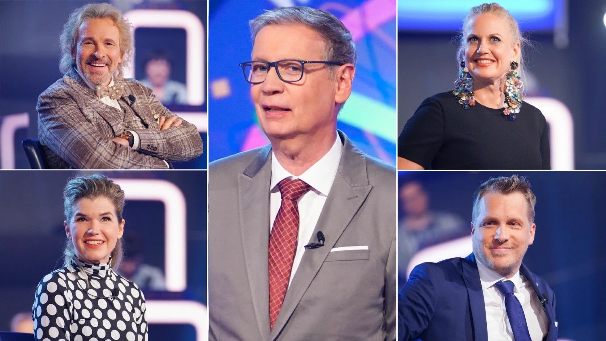
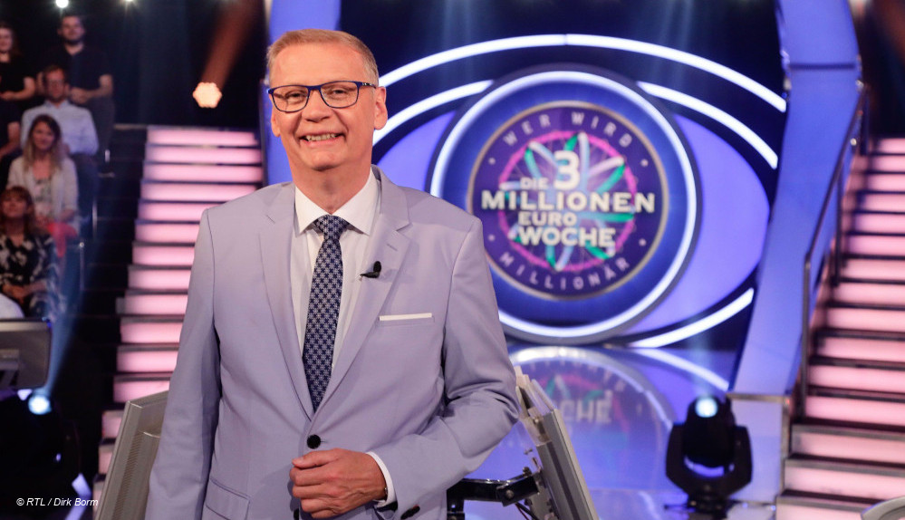

Die Geschichte - Zocker-Special

Das Zocker-Special wurde eingeführt, um das Format von "Wer wird Millionär?" abwechslungsreicher und spannender zu gestalten. Es sollte besonders mutige Kandidaten ansprechen, die bereit waren, für den maximalen Gewinn ein höheres Risiko einzugehen. Gleichzeitig sorgte es für mehr Nervenkitzel und Unterhaltung für die Zuschauer.

Keine Sicherheitsstufe bei 16.000 Euro
- Anders als im klassischen Format gibt es im Zocker-Special keine garantierte Gewinnstufe bei 16.000 Euro.
- Kandidaten können bis auf 1.000 Euro abstürzen, egal wie weit sie bereits gekommen sind.
Schwierigere Fragen
- Die Fragen sind anspruchsvoller als in regulären Ausgaben.
- Es erfordert umfangreiches Wissen, strategisches Denken und starke Nerven, um im Zocker-Special erfolgreich zu sein.
Zusätzlicher Joker
- Im Zocker-Special gibt es einen vierten Joker:
- den Fragen-Tausch-Joker. Damit kann der Kandidat eine Frage überspringen und eine neue erhalten,
- was in kritischen Momenten ein großer Vorteil sein kann.
Gewagte Entscheidungen
Einige Kandidaten beeindruckten mit ihrem Mut, auf hohen Gewinnstufen weiterzuspielen, obwohl sie alles verlieren konnten. Ihre risikoreichen Entscheidungen sorgten oft für atemberaubende Spannung.
Spektakuläre Gewinne und Verluste
Das Zocker-Special brachte sowohl große Erfolge als auch dramatische Abstürze mit sich. Diese Momente wurden zu echten Höhepunkten der Show und boten reichlich Gesprächsstoff für Zuschauer und Fans.